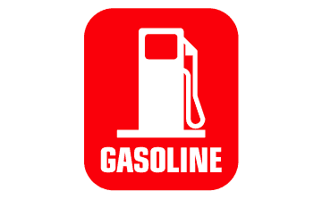
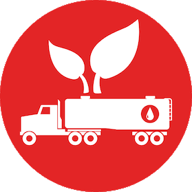

MAIN PRODUCTS

BULK CRUDE OIL
We use our global presence market knowledge and logistics experience to balance supply and service the needs of our customers around the world.

AVIATION JET FUEL
To successfully trade in aviation kerosene, a company needs to have a clear understanding of the meaning of just in time sourcing and what that means to be competitive

GASOLINE DIESEL FUEL
NATC provides various grades of Gasoline Diesel Fuel

LNG-LPG
The LNG-LPG is a very complex and is a high capital expenditure market for producers, consumers and shippers and are the most complex fuel products that are logistics demanding.
Nigerian-Asian Trade Conglomerate specializes in Nigerian Light Crude Oil / Bonny light crude oil (BLCO). We have genuine title holder sellers with verifiable credentials. The term BLCO is basically a broker term for what is really Nigerian Light Crude Oil. Please remember there are various types/API and sulfur ranges of Nigerian Crude Oil. Bonny Light is just one of them. When a buyer purchases BLCO they are actually getting a blend of Nigerian Light Crude Oil. Bonny Light crude oil is considered to be one of the best light crude oil products in the world because it is easy to refine as a result of the low sulfur content and API. Due to this factor, BLCO is highly sought after. The conundrum buyer’s face with purchasing BLCO is finding a genuine supplier that can actually deliver the product. Finding a verifiable seller in the Nigerian Light Crude Oil / Bonny light crude oil market is quite simple when you are dealing with the right sellers/suppliers. Getting genuine crude oil sellers/suppliers might be very difficult to some buyers because some people will be claiming to have products to sell when they do not. It is our purpose to assist serious buyers to deal with genuine sellers directly, through NATC. We invite genuine off - OPEC allocation titleholders from NNPC to contact us as we have genuine and very capable buyers waiting to do business. We are your gateway to dealing with authorized sellers of Bonny light crude oil hassle free.